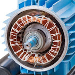
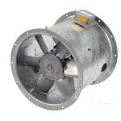
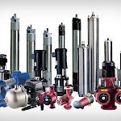
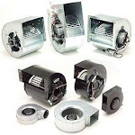
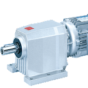

Motor Rewind
Machine-wound stators and armatures for single phase motors, three phase motors and armatures, checked throughout each stage of the rewind.

Established in 1985, GMT Electrical Services Ltd repairs, rewinds and maintains motors, pumps, fans, kitchen extractors and gearboxes for businesses across Croydon and South London.
Fast practical support for motors, pumps, fans and related plant, with repair, supply and installation options.
Machine-wound stators and armatures for single phase motors, three phase motors and armatures, checked throughout each stage of the rewind.

Repairs for 1 phase and 3 phase motors, including testing, refurbishment and replacement options when a quick turnaround matters.

Repair and installation support for scroll fans, toilet extractors, boiler fans and other commercial fan systems.

Overhaul, supply and installation for a wide range of pumps, including sump pumps, pool pumps and multi-stage pumps.

Repair, supply and fitting for kitchen extractor fans where heat, downtime and ventilation issues affect service.

Inspection, repair and supply of mechanical gearboxes for AC and DC equipment, including urgent business-critical breakdowns.
GMT Electrical Services was started by three partners who had worked for one of the industry's most experienced companies. The team has continued to adapt with the industry while building long-standing knowledge in motor rewind, pumps, motors, extractors, air conditioning, gearboxes and fan repairs.
93-95 Gloucester Rd
Croydon
CR0 2DN